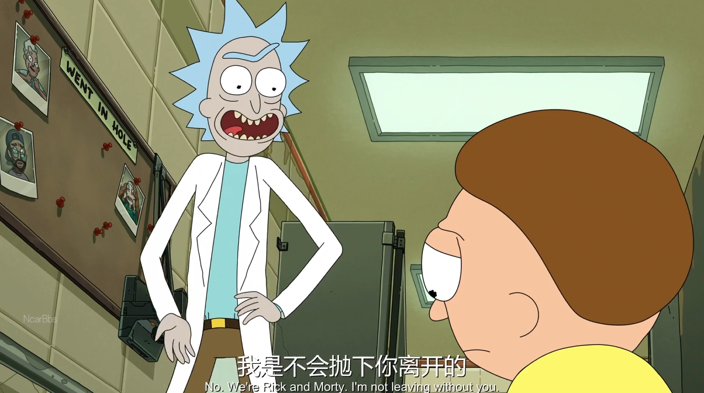

t

When people think about animation, they usually imagine colorful characters, exaggerated movements, or entertaining stories. However, one of the most fascinating aspects of animation is communication. Animation is not only about dialogue. It is about emotions, atmosphere, silence, and the invisible connections between characters and audiences.
Recently, while watching Rick and Morty Season 7 , I noticed how naturally the series presents communication between partners and family members. The characters are often blunt, emotionally chaotic, and brutally honest with one another. Even in absurd situations, their conversations still feel deeply human. Through fast-paced dialogue, exaggerated expressions, and emotional conflict, the show reflects the complexity of modern relationships.

This made me realize that communication in animation goes far beyond simply conveying information. At its core, animation creates emotional responses. It allows audiences to feel tension, loneliness, warmth, or connection, sometimes without needing many words at all.
01. The Unique Power of Animation
One of the most remarkable qualities of animation is its versatility. It can move effortlessly from energetic comedy to quiet introspection. A scene may begin with exaggerated humor and suddenly transition into a deeply emotional moment.
Because animation is not limited by realism, creators are able to exaggerate feelings visually. A character's movement, facial expression, color palette, or even the pacing of a scene can communicate emotions more effectively than dialogue. In this way, animation becomes a language of its own.
Different cultural contexts also influence how communication is portrayed in animation. Some stories rely on direct emotional expression, while others communicate through subtle implication and silence.
02. When Silence Speaks Louder Than Dialogue
A powerful example of this can be found in Neon Genesis Evangelion, especially in the relationship between Shinji Ikari and Gendo Ikari.
Their father-son relationship remains memorable because of the emotional distance between them. Through long silences, restrained dialogue, and empty visual space, the anime creates a profound sense of separation. Instead of dramatic speeches, the emotional tension is communicated through atmosphere and visual composition.
This style of storytelling reflects a more subtle form of communication. The audience is expected to interpret emotions from pauses, expressions, and silence rather than explicit explanation. In many ways, silence itself becomes part of the conversation.
03. Animation and Cultural Expression
In the early 21st century, American animation also began exploring elements of Chinese culture, introducing audiences to storytelling styles different from familiar Western narratives. These works often portrayed characters with more nuanced emotions and subtle dialogue, sometimes described as “high-context” expression where meaning is implied rather than directly stated.
At the same time, Chinese animation has continued to showcase the richness of Chinese culture through mythology, martial arts, folklore, and historical themes. Creating characters within these diverse settings is not a simple task. The personality, behavior, and communication style of a character are often shaped by their environment and cultural background.
This relationship between character and setting is part of what gives Chinese animation its distinctive charm. It also demonstrates how animation can preserve and communicate cultural identity.
04. Communication Beyond the Screen
Communication in animation does not only exist between characters. It also exists behind the scenes.
Animation is an intensely collaborative art form that brings together writers, storyboard artists, animators, voice actors, designers, and directors. Different ideas and creative perspectives must come together to form a unified vision. In many ways, every animated work is itself the result of communication and teamwork.
Perhaps this is why animation feels so emotionally powerful. It reflects not only fictional emotions, but also real human understanding and collaboration.
Final Thoughts
Although many of these examples focus on parent-child relationships and family dynamics, they ultimately reveal something much broader about human communication.
Animation has the ability to transcend language and cultural barriers through emotion, visual storytelling, and imagination. Whether through direct dialogue, subtle implication, or meaningful silence, animation communicates experiences that audiences around the world can understand and relate to.
In the end, the true beauty of animation lies not only in how it looks, but in how deeply it allows people to connect with one another.